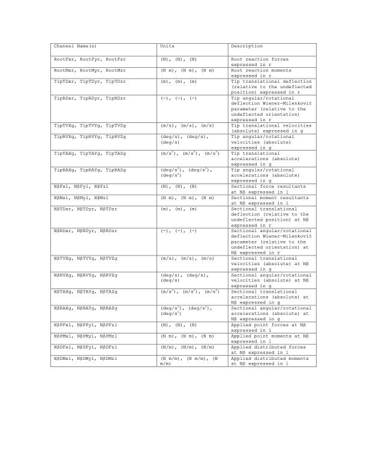

4.7.8. 부록
4.7.8.1. BeamDyn 입력 파일
이 부록에서는 BeamDyn 입력 파일 구조를 설명하고 NREL 5MW 기준 풍력 터빈에 대한 예를 제공합니다.
OpenFAST+BeamDyn 및 독립형 BeamDyn(정적 및 동적) 시뮬레이션에는 모두 두 개의 파일이 필요합니다.
1) BeamDyn 기본 입력 파일
(NREL 5MW static example): 이 파일에는 수치 해 매개변수(예: 수치 감쇠, 구적법 규칙)에 대한 정보와 "부재" 및 "핵심 지점"을 통한 빔 기준선의 기하학적 정의가 포함되어 있습니다. 이 파일은 "블레이드 입력 파일"도 지정합니다.
BeamDyn 블레이드 입력 파일
(NREL 5MW example): 이 파일은 블레이드를 따라 다양한 스테이션에서 블레이드 단면 속성을 지정합니다. 파일에는 각 스테이션의 강성과 질량 행렬은 물론 감쇠 매개변수도 포함됩니다. 예제 파일에서는 강성 비례 감쇠(damp_flag = 1)를 사용합니다. 모달 감쇠(damp_flag = 2)의 경우 n_modes 매개변수는 0이 아닌 값으로 설정되어야 하며 그 뒤에 임계 감쇠 비율로 표시되는 해당 모달 감쇠비(제타 값)가 와야 합니다.
독립형 BeamDyn 시뮬레이션에는 드라이버 입력 파일도 필요합니다. 여기에 정적 및 동적 시뮬레이션에 대한 예가 나열되어 있습니다.
3a) 동적 시뮬레이션을 위한 BeamDyn 드라이버 (NREL 5MW example): 이 파일은 단일 블레이드에 대한 입력(예: 힘, 방향, 루트 속도)을 지정하고 BeamDyn 기본 입력 파일을 지정합니다.
3b) 정적 시뮬레이션용 BeamDyn 드라이버 (NREL 5MW example): 위와 동일하지만 정적 분석용입니다.
4.7.8.2. BeamDyn 출력 채널 목록
이것은 BeamDyn 모듈에 대해 가능한 모든 출력 매개변수의 목록입니다. 이름은 의미별로 그룹화되어 있지만 사용자가 적합하다고 생각하는 대로 BeamDyn 기본 입력 파일의 OUTPUTS 섹션에서 순서를 지정할 수 있습니다. N\(\beta\), 출력 노드를 나타냅니다. \(\beta\), 어디
\(\beta\) 항목에 해당하는 [1,9] 범위의 숫자입니다.
\(\beta\) 다음 내의 OutNd 목록. FAST에 연결되면 “\(B\alpha\)"는 각 출력 이름 앞에 붙습니다. 여기서 \(\alpha\)
블레이드 번호에 해당하는 [1,3] 범위의 숫자입니다. 출력은 다음 세 가지 좌표계 중 하나로 표현됩니다.
r: 이동 빔의 루트에 고정된 부동 기준 좌표계; 블레이드의 경우 FAST에 결합되면 이는 IEC 블레이드(b) 좌표계와 동일합니다.
l: 편향된 빔에 국한된 부동 좌표계입니다.
g: 전체 관성계 좌표계; FAST와 결합하면 이는 FAST의 전역 관성계(i) 좌표계와 동일합니다.


그림 4.36 BeamDyn 출력 채널 목록
참고
새로운 출력 채널(v5.0 이상):
이제 BeamDyn에는 루트 노드에 매핑된 적용된 하중에 대한 추가 출력 채널이 포함됩니다. 이러한 채널은 루트 좌표계(r)와 전역 관성계(g)로 표현되는 블레이드 루트에서 해석된 총 적용 하중(분산 및 점 하중 모두)을 제공합니다.
RootAppliedFxr, RootAppliedFyr, RootAppliedFzr: r-프레임에 적용된 힘 성분
RootAppliedMxr, RootAppliedMyr, RootAppliedMzr: R-프레임에 모멘트 성분을 적용
RootAppliedFxg, RootAppliedFyg, RootAppliedFzg: g-프레임에 적용된 힘 성분
RootAppliedMxg, RootAppliedMyg, RootAppliedMzg: g-frame에 모멘트 성분을 적용
이러한 출력은 특히 하중 불균형을 진단하거나 힘 분포를 검증할 때 블레이드에 작용하는 총 공기 역학 및 기타 외부 하중을 이해하는 데 유용합니다.